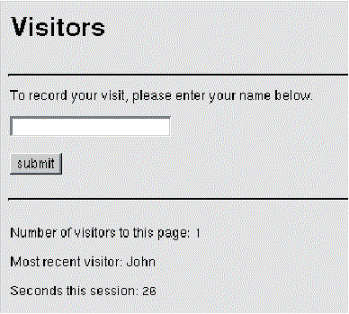

Table of Contents
Table of Contents
 Previous Section
Previous Section
Table of Contents
Previous Section
To explain how a WebScript operates within the larger context of a WebObjects application, this section uses the Visitors application as an example. The Visitors application takes the name of the current visitor, and displays the most recent visitor, the total number of visitors to the page, and the time remaining in the session:

The Visitors application includes the following directories and files:
/Visitors.woa
Application.wos
Session.wos
/Main.wo
Main.html
Main.wod
Main.wos
To view the contents of Main.wod and Main.html, see the on-line Visitors example. The contents of Application.wos, Session.wos, and Main.wos are listed in the following sections.
Application.wos is the application script for the Visitors application. It declares two application variables: visitorNum and lastVisitor. Application variables can be accessed throughout the application, and they live for the duration of the application. For more information on application variables, see the section "Variables and Scope".
id lastVisitor;
// the most recent visitor
id visitorNum;
// the total number of visitors the page
- init
{
[super init];
lastVisitor = @"";
[self setTimeOut:7200];
return self;
}
The Application.wos script includes a method called init. The init method is where you can initialize the variables associated with the object. Thus, in an application script, it's common to implement an init method to initialize application variables. In a component script, on the other hand, you use init to prepare the associated page and its variables for use during the processing of the page.
As illustrated in the above example, an implementation of init should always begin by invoking the init method of super (the superclass object). It should always end by returning self.
In Session.wos of the Visitors application, an init method also initializes declared variables. These variables have session-wide visibility and persistence. But this init does much more than initialze variables.
id timeSinceSessionBegan;
id timer;
- init
{
[super init];
timeSinceSessionBegan = 0;
timer = [NSTimer scheduledTimerWithTimeInterval:1.0 target:self
selector:"timeOfSession" userInfo:nil repeats:YES];
[self setTimeOut:120];
return self;
}
- timeOfSession
{
timeSinceSessionBegan++;
}
As this example shows, you can do many things in the init method to set up the associated object besides initializing variables. This code example also illustrates a couple specific aspects of WebScript. The "hidden" variable self in this script refers to a WOSession object, and so the method invoked (setTimeOut:) must be declared by the WOSession class. Second, you can invoke any method of the Foundation framework, such as NSTimer's scheduledTimerWithTimeInterval:target:selector:userInfo:repeats:.
The script associated with the first (and in this example, only) page of the Visitors application is Main.wos. This script increments the number of visitors to the page (visitorNum), and assigns the name (aName) entered in the application's text field to the last visitor (lastVisitor). It then clears the text field by assigning an empty string to aName.
For a given page, the awake method is invoked exactly once per transaction, at the beginning of that transaction. The init method is invoked only once, at the start of an object's lifetime (see "The Duration of a Component " for the reasons why). Because of this, it is more appropriate in the Visitor application to implement awake rather than init. We want to track each "visit" to this page. Because awake is invoked once per transaction, if the same page handles the request as well as generates the response (for example, the first page of an application), the awake method is only invoked during the request phase.
The awake method is the best place to initialize variables whose values are known or can be resolved at the start of the request-response cycle, such as a list of hyperlinks. The advantage of using awake to perform this type of initialization is that the variables are guaranteed to be initialized every time the page is displayed.
The awake method has a complementary method, sleep, in which you can explictly deallocate objects assigned to variables by assigning nil to the variables. As a technique for improving application scalability, you can turn off page caching, initialize variables in awake (rather than in init), and deallocate them in sleep.
Main.wos
id number, aName;
- awake {
if (!number) {
number = [[self application] visitorNum];
number++;
[[self application] setVisitorNum:number];
}
}
- recordMe
{
if ([aName length]) {
[[self application] setLastVisitor:aName];
[self setAName:@""]; // clear the text field
}
return self; // use request page as response page
}
Implementing the awake Method
 Next Section
Next Section